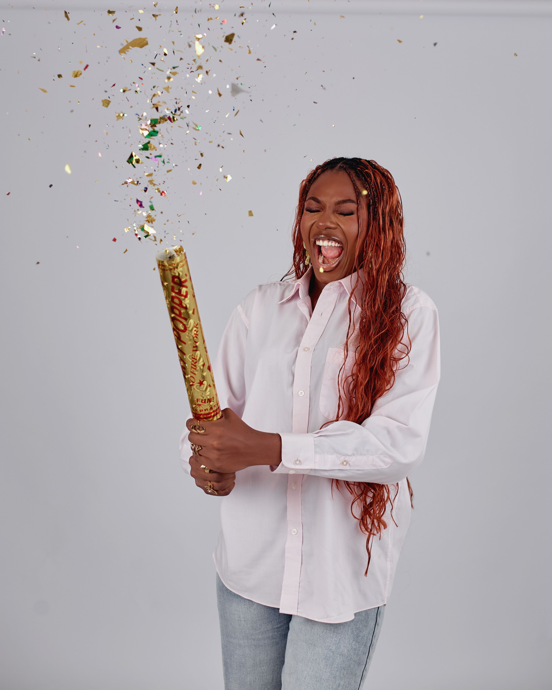

Path to Today
After attending New Jersey City University for 5.5 years, I graduated with a Bachelor's degree in Marketing and a portfolio that helped me land my first job at a small marketing agency in Fall 2017.
In early 2019, I worked as a temporary employee in the Marketing department of a large law firm. I assisted in creating marketing materials and organizing information for the firm's records.
In Summer 2019, I started working at an architecture company as an Administrative and Marketing Assistant. I used my marketing skills to create monthly e-newsletters for employees and clients.
I also assisted in updating the company's website with content about completed projects and events the company was attending.
You can learn more about my work history by clicking the link below.
Amber Vaughn LinkedIn PageTo view my Marketing Portfolio, please click the link below.
Click to View My Marketing PortfolioSince then, I have worked in customer service, hospitality, and office administration positions that helped strengthen my transferable skills.
For the past month, I have been continuously updating my skills and applying for job opportunities. Since starting an online course in Web Development and Coding, I've been able to apply what I've learned to create this website. Below is a timeline of my progress.
My Web Development Timeline
On August 18, 2026, this website was created as a single webpage with plain text, photos, and a link.
On August 19, 2026, I received my Introduction to HTML5 course certificate through Coursera. I started my Introduction to CSS3 course shortly after.
Click to View Introduction to HTML5 CertificateOn August 20, 2026, I added a background color and updated the font size, color, and style.
On August 31, 2026, I added a navigation bar to the top of the page with links to other pages I created for this website.
